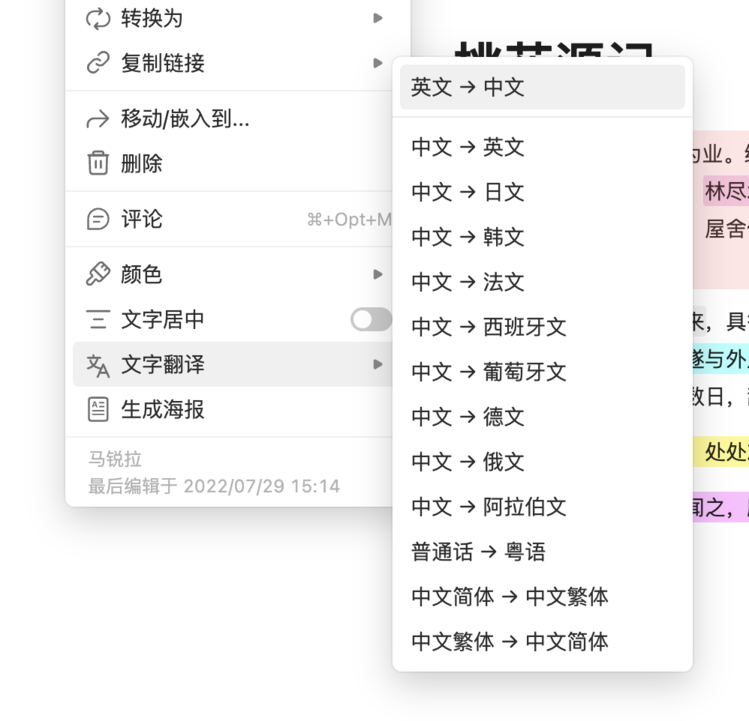

文字翻译
在文本类块的块菜单中，选择“文字翻译”，即可对当前块文字进行翻译。

翻译结果默认合并在当前块的文本之后。例如，原块为：
又是美好的一天！
翻译为英文后，原块内容自动更新为：
又是美好的一天！
Another beautiful day!
目前wolai支持以下翻译方式：
·英文 → 中文
·中文 → 英文
·中文 → 日文
·中文 → 韩文
·中文 → 法文
·中文 → 西班牙文
·中文 → 葡萄牙文
·中文 → 德文
·中文 → 意大利文
·中文 → 俄文
·中文 → 阿拉伯文
·普通话 → 粤语
·中文简体 → 中文繁体
·中文繁体 → 中文简体
注意：单个块文字超过3000字时，将无法使用文字翻译功能。